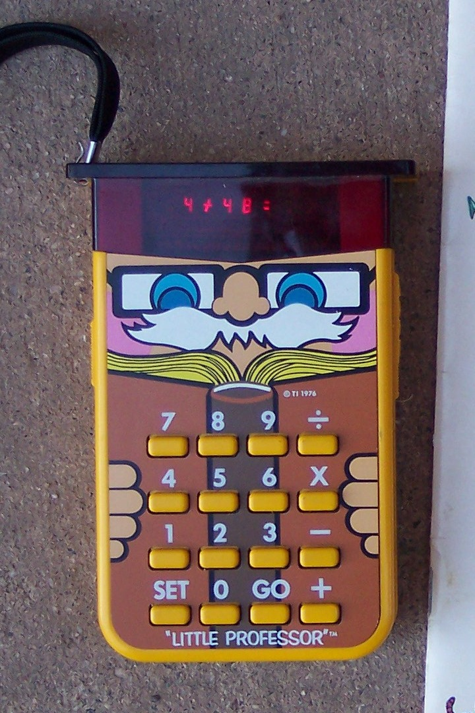

The calculator that asked the questions
In 1976, Texas Instruments — the calculator company — released a calculator that refused to calculate. Instead, it asked. The Little Professor became the first electronic educational toy and the ancestor of every drill-and-practice app, from Duolingo to Khan Academy.

In 1976, Texas Instruments was a calculator company. It had built its fortune on machines that took your numbers and gave you answers — fast, silently, correctly. The TI-30, the Datamath, the SR-52. You asked, they answered.
So when TI introduced the Little Professor on June 13, 1976, the device was a kind of heresy: a calculator that would not calculate.
You pick the operation — addition, subtraction, multiplication, division — and one of five difficulty levels. The LED display flickers and presents: 3 × 6 =. You press 1 then 8. The display shows 18 and the machine moves on. That was correct. Good job. Next problem.
Three tries per question. After three wrong answers, the display shows EEE — the machine's only way of saying "enough" — and shows you the right answer. After ten problems, you get a score: how many you got right on the first try. The owl face stares at you, and you feel judged in a friendly way.
Under twenty dollars. More than one million units sold in the first year alone.
What makes the Little Professor remarkable is not the technology — a TI TMS1000 4-bit microcontroller, identical in class to the one inside the Milton Bradley Simon — but the relationship it proposed between human and machine. The calculator had always been a tool. You pointed it at a problem and it pointed back at the answer. The Little Professor inverted that relationship completely. Now the machine generated the problem and waited for you to prove yourself. The computer became the teacher.
This seems obvious now because we live inside an environment where machines quiz us constantly — Duolingo, Quizlet, Khan Academy, every adaptive learning platform — but in 1976 it was new. The idea that a child would sit with a computerized device and let it ask them questions was not obvious. The pedagogy was entirely in the interaction design. The device had no curriculum, no adaptive difficulty in any modern sense — just random problems at a fixed level — yet it worked because the interaction model was sound: present a challenge, accept an answer, give feedback, keep score.
Children internalized this. The Little Professor wasn't a game, but it felt like one because the interaction loop was the same: stimulus, response, reward, repeat. The fact that the problems were arithmetic was almost incidental. The machine had learned to play the role of the teacher, and children learned to play the role of the student — both roles mediated by four rubber buttons and a red LED display.
The Little Professor remained in production for decades. There are solar-powered versions. There is a MESS emulator. It shows up in Harvard's CS50 course as an example of interaction design that outlived its technology. But the clearest measure of its influence is that the interaction model it pioneered — machine asks, human answers — now feels inevitable. We do not remark on it. We quiz ourselves on our phones, our watches, our laptops, our tablets. The owl-face has been invisible, but it is everywhere.
The most radical thing about the Little Professor is that TI, a calculator company, chose to build a device that would not calculate. It chose to turn a child's relationship with computation from one of dependency — "the machine knows, I do not" — into one of competence — "the machine asked, and I answered correctly." That is a subtle and humane insight, and it arrived in a beige plastic shell with googly eyes and an LED brain the size of a postage stamp.
The machine that asks instead of answers. It's the quietest heresy in the history of educational technology.